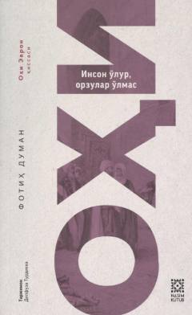

OInson o'lur, ammo orzular o'lmasligini tarannum etuvchi ta'sirli asar.
Ushbu kitob turk yozuvchisi Fotih Duman qalamiga mansub bo'lib, inson hayoti, orzular va uning mazmuni haqida hikoya qiladi. Asar turk tilidan tarjima qilingan bo'lib, o'quvchilarga chuqur ma'naviy ta'sir ko'rsatadi. Kitobda inson o'lsa ham, uning ezgu orzulari yashashda davom etishi ta'sirchan tarzda ochib berilgan.